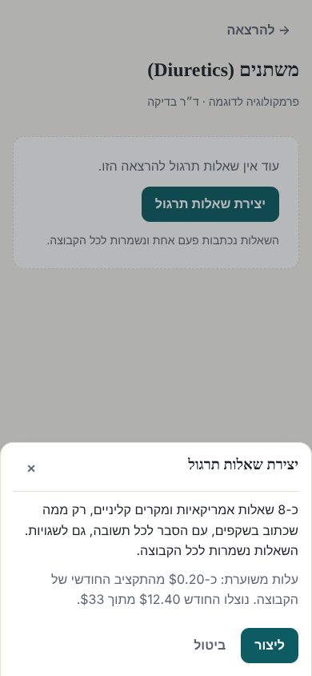
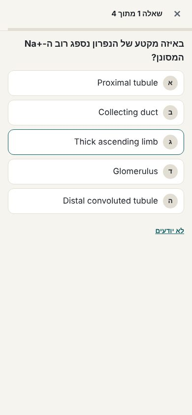

NotebookLM
ביצירת מבחן: כמה שאלות (פחות · רגיל · יותר), רמה (קל · בינוני · קשה), שדה ׳על מה להתמקד׳, ובחירה מאילו מקורות.
מה לוקחים: שלוש רמות כמות, רמה, ושדה מיקוד.
יצירת שאלות שאפשר לשלוט בה, כמות שנקבעת לפי החומר, ומראה שתואם את המסכים שאישרת. שום דבר מזה לא נבנה עדיין: מחכה לאישור שלך.
יש כפתור אחד, ׳ליצור׳. אי אפשר לבחור כמה שאלות, על אילו חלקים, באיזה סגנון או באיזו רמה, ואי אפשר לתת דוגמה.
הכלל היום הוא בערך שאלה לכל 2.5 שקפים, ולפחות 6. לכן הרצאה קצרה מקבלת 6, גם כשיש בה הרבה מה לדעת.
המסכים שעלו נבנו לפי המפרט הטכני שנכתב לפני ההצעה. חסרים בהם הימור הביטחון, סדר ההסברים, ׳מתי כן׳ ו׳לפסקה׳, והם לא נראים כמו המסכים שאישרת.


ביצירת מבחן: כמה שאלות (פחות · רגיל · יותר), רמה (קל · בינוני · קשה), שדה ׳על מה להתמקד׳, ובחירה מאילו מקורות.
מה לוקחים: שלוש רמות כמות, רמה, ושדה מיקוד.
בונים סבב תרגול עם מסננים: נושא, רמה, ומצב השאלה (עוד לא נענו, טעויות, מסומנות), מספר שאלות, ומצב לימוד או מבחן.
מה לוקחים: המסך ׳סבב חדש׳: מאיפה, על מה, כמה, ותרגול או מבחן.
סוגי שאלות, רמות קושי או רמה שנקבעת לפי מורכבות החומר, מסיחים שנשמעים נכונים, ושאלות בסגנון של מבחן.
מה לוקחים: סגנונות לבחירה, ׳כמו במבחן׳, ודוגמה לסגנון.
המספרים במסכים הם דוגמה על ההרצאה על תרופות נגד טפילים.
מלא: כל נקודה שצריך לדעת מופיעה לפחות פעם. דגלים אדומים תמיד בפנים.
אישה בת 28 חוזרת מטיול בהודו עם חום כל 48 שעות. במשטח: P. vivax. מה הצעד הבא לפני מתן הטיפול?
א. … ב. … ג. … ד. … ה. …
כל שאלה נבדקת בידי פותר עיוור לפני שהיא נכנסת לבנק. נשמרות לכל הקבוצה.
מטייל חזר מניגריה עם חום, ובמשטח P. falciparum. מה האבחנה?
איך Sodium stibogluconate הופכת לפעילה בתוך הטפיל?
איזו מהבאות אינה תופעת לוואי של Quinine?
נכתבת מחדש אוטומטית.
קודם מחלצים מהסיכום את הנקודות שצריך לדעת: תרופה, מנגנון, התוויה, תופעת לוואי, התוויית נגד, ומספר שכדאי לזכור. הכמות נגזרת מהן. בהרצאה לדוגמה יש 46 נקודות.
| רמה | מה נכנס | בדוגמה | עלות |
|---|---|---|---|
| ממוקד | רק הנקודות החשובות ביותר: דגלים אדומים, התוויות נגד, תרופות לבחירה (בערך שאלה ל-4 נקודות) | 12 | כ-$0.30 |
| מלא | כל נקודה שצריך לדעת מופיעה לפחות פעם (בערך שאלה ל-2 נקודות) | 24 | כ-$0.60 |
| מקיף | כל נקודה מכמה כיוונים: מקרה, מנגנון, השוואה (בערך שאלה לנקודה) | 40 | כ-$1.00 |
| משלי | מספר שבוחרים | … | לפי המספר |
העלויות במחיר מלא. במצב החסכוני (Batch API) בערך חצי. כל שאלה כוללת בדיקה של פותר עיוור, שעונה בלי לראות את המפתח כדי לתפוס מפתח שגוי.
קודם המסך שעלה, ואחריו המסך שאושר בהצעה. התרגול והכרטיסיות יעברו למראה המאושר, וכל מסך חדש ייבנה בו.
מטייל חזר מתאילנד עם חום, ובמשטח P. vivax. אחרי Chloroquine החום ירד. מה עוד חייבים לעשות לפני השחרור?
טעות ׳על בטוח׳ נכנסת לרשימת הסכנה. התשובה וההימור נשמרים רק אצלך.
העיצוב של המסכים שאישרת הופך לעיצוב של האפליקציה עצמה: גופנים, כרטיסים, צ׳יפים, כותרות ולשוניות. התרגול והכרטיסיות שכבר עלו עוברים אליו, כולל הימור הביטחון, סדר ההסברים, ׳מתי כן׳ ו׳לפסקה׳.
ארבעת המסכים כאן: מה ליצור, דוגמה ומיקוד, הבנק נבנה עם בדיקה של כל שאלה, וסבב חדש. הכמות נקבעת לפי הנקודות שצריך לדעת, לא לפי מספר השקפים.
שניהם כבר בבנייה. המבחן ייצא ישר במראה החדש.
אם ההמלצות מתאימות, מספיק לכתוב ׳מאשר׳ בצ׳אט. אם לא, לכתוב מה לשנות.
ההמלצה: ׳מלא׳: כל נקודה לפחות פעם. ב-20 הרצאות בחודש זה כ-$12 במחיר מלא (היום כ-$7.60), וחצי מזה במצב החסכוני.
ההמלצה: כל אחד בקבוצה, והבנק משותף. מי שיוצר רואה את הבנק נבנה ומאשר; לכל השאר הוא פשוט מופיע.
ההמלצה: כן, עם כפתור ׳להוסיף הכול׳ למי שלא רוצה לעבור אחת אחת. שאלה שהפותר העיוור טעה בה נכתבת מחדש אוטומטית.